<title>Mitochondrion Colours</title>
<meta name="claude:viewport-fit-sides" content="cover">
<link rel="preconnect" href="https://fonts.googleapis.com">
<link rel="preconnect" href="https://fonts.gstatic.com" crossorigin>
<link rel="stylesheet" href="https://fonts.googleapis.com/css2?family=Ysabeau:wght@500;650&display=swap">
<style>
  /* One column: the three paintings side by side, then each idea on the real homepage (the
     opening flowing into the cell, the section up close, the phone). */
  :root {
    --paper: #f6f1e7; --ink: #1d1b18; --ink-soft: #5d574e; --rule: #ddd4c4; --gold: #a77c25; --pick: #2f4a3a;
    --title: "Ysabeau", "Palatino Linotype", Palatino, Georgia, serif;
    --body: system-ui, -apple-system, "Segoe UI", Roboto, sans-serif;
  }
  @media (prefers-color-scheme: dark) {
    :root:not([data-theme="light"]) { --paper: #1b1a17; --ink: #f1ece2; --ink-soft: #b9b0a2; --rule: #3a3630; --gold: #d6aa52; --pick: #9cc3a8; color-scheme: dark; }
  }
  :root[data-theme="dark"] { --paper: #1b1a17; --ink: #f1ece2; --ink-soft: #b9b0a2; --rule: #3a3630; --gold: #d6aa52; --pick: #9cc3a8; color-scheme: dark; }
  body { background: var(--paper); color: var(--ink); font: 17px/1.55 var(--body); margin: 0;
    padding-left: max(16px, env(safe-area-inset-left, 0px)); padding-right: max(16px, env(safe-area-inset-right, 0px)); }
  main { max-width: 1100px; margin: 0 auto; padding-block: 40px 72px; display: grid; gap: 52px; }
  h1, h2 { font-family: var(--title); font-weight: 650; margin: 0; letter-spacing: -0.01em; text-wrap: balance; }
  h1 { font-size: clamp(34px, 6vw, 52px); line-height: 1.05; }
  h2 { font-size: clamp(26px, 4vw, 34px); line-height: 1.1; }
  p { margin: 0; max-width: 62ch; }
  .intro { display: grid; gap: 12px; }
  .intro p { color: var(--ink-soft); font-size: 18px; }
  .trio { display: grid; grid-template-columns: repeat(3, 1fr); gap: 12px; }
  .choice { display: grid; gap: 14px; padding-top: 26px; border-top: 1px solid var(--rule); }
  .head { display: flex; flex-wrap: wrap; align-items: baseline; gap: 10px 16px; }
  .letter { font-family: var(--title); font-size: clamp(44px, 7vw, 60px); line-height: 0.8; color: var(--gold); font-weight: 650; }
  .score { font: 600 15px/1 var(--body); font-variant-numeric: tabular-nums; padding: 7px 11px; border: 1px solid var(--rule); border-radius: 999px; color: var(--ink-soft); }
  .tag { font: 600 13px/1 var(--body); letter-spacing: 0.06em; text-transform: uppercase; color: var(--paper); background: var(--pick); padding: 7px 10px; border-radius: 999px; }
  .what { font-size: 18px; }
  .note { color: var(--ink-soft); }
  .shots { display: grid; grid-template-columns: 1.1fr 2fr 0.75fr; gap: 12px; align-items: start; }
  figure { margin: 0; display: grid; gap: 6px; min-width: 0; }
  figure img { width: 100%; height: auto; display: block; border-radius: 6px; border: 1px solid var(--rule); }
  figcaption { font-size: 13px; color: var(--ink-soft); }
  @media (max-width: 720px) {
    body { font-size: 16px; }
    main { gap: 40px; padding-block: 24px 56px; }
    .trio { grid-template-columns: 1fr; gap: 14px; }
    .shots { grid-template-columns: 1fr 1fr; }
    .shots .desk { grid-column: 1 / -1; order: 3; }
  }
</style>

<main>
  <header class="intro">
    <h1>The mitochondrion</h1>
    <p>Same painting, every stroke kept. Only the paint changes. The gold folds stay gold.</p>
    <p>Shot on the real homepage, as a visitor scrolls from the sequoias into the cell. Nothing is live.</p>
  </header>

  <section class="trio" aria-label="The three paintings side by side">
    <figure>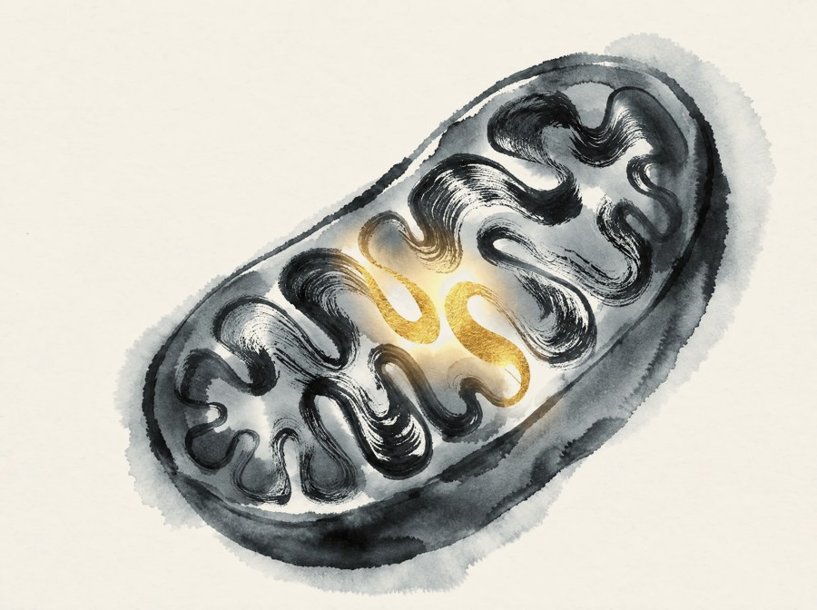<figcaption>Today</figcaption></figure>
    <figure>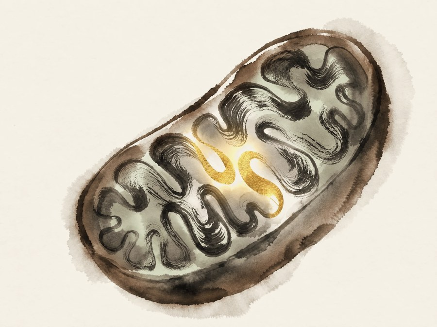<figcaption>A, California colour</figcaption></figure>
    <figure>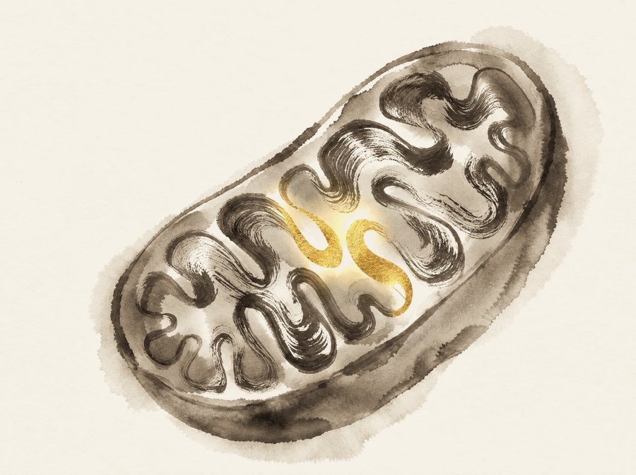<figcaption>B, softer ink</figcaption></figure>
  </section>

  <section class="choice" aria-labelledby="a-name">
    <div class="head">
      <span class="letter">A</span>
      <h2 id="a-name">California colour</h2>
      <span class="score">8 / 10</span>
      <span class="tag">My pick</span>
    </div>
    <p class="what">The skin takes the redwood's copper, the inside a pale sage like the firs, and the folds turn a warm grey instead of black.</p>
    <p class="note">It picks up the opening's colours, so the page flows from the grove into the cell. Holding it back: from a distance it reads mostly brown; the sage is faint.</p>
    <div class="shots">
      <figure>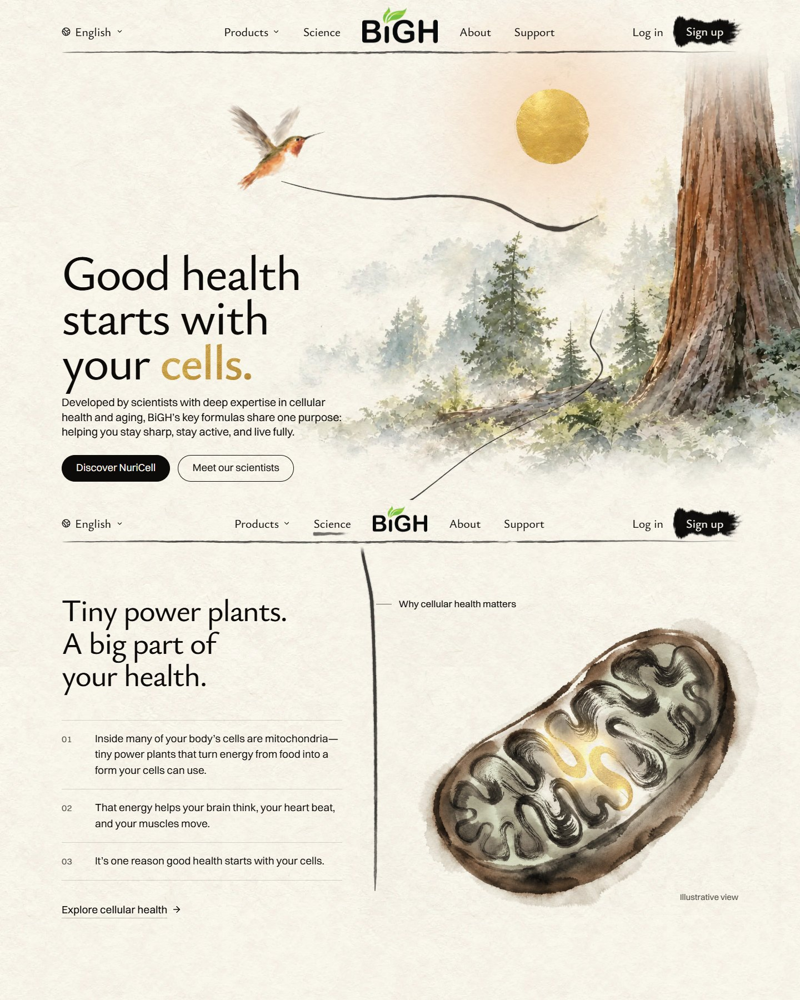<figcaption>Laptop, scrolling from the opening</figcaption></figure>
      <figure class="desk">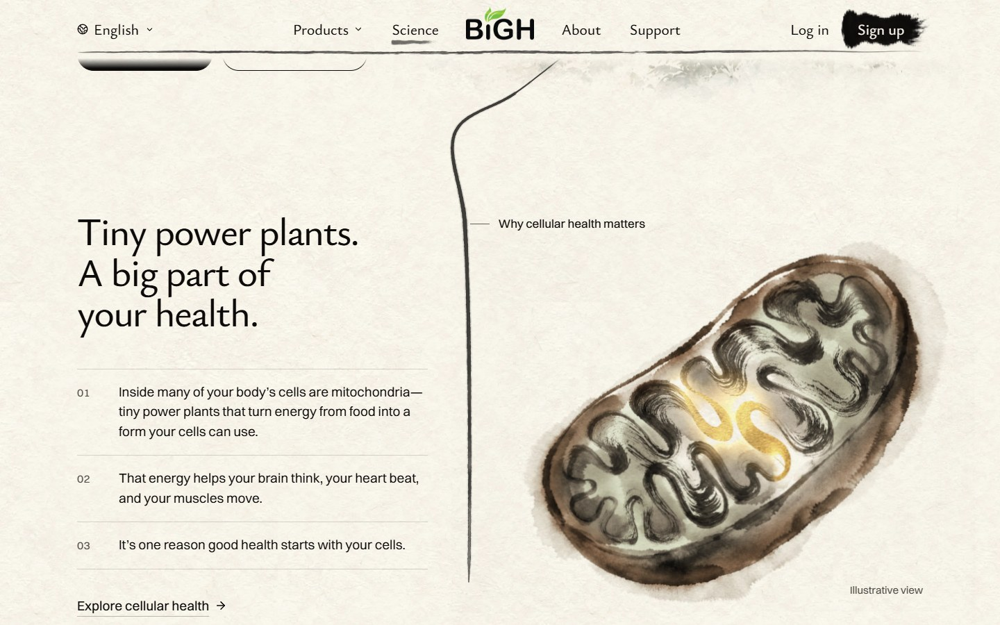<figcaption>Laptop, the section</figcaption></figure>
      <figure>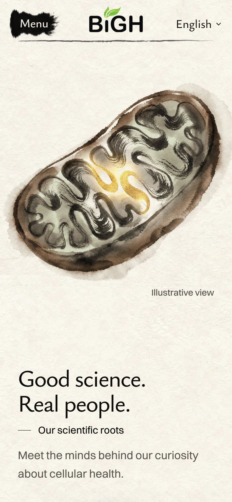<figcaption>Phone</figcaption></figure>
    </div>
  </section>

  <section class="choice" aria-labelledby="b-name">
    <div class="head">
      <span class="letter">B</span>
      <h2 id="b-name">Softer ink</h2>
      <span class="score">7.5 / 10</span>
    </div>
    <p class="what">No new colours. All the ink about a third lighter and warmed to the sepia grey of the sequoias' shadows.</p>
    <p class="note">Calm, and much less heavy than today. Holding it back: it reads a little like an old sepia print, and adds less California than A.</p>
    <div class="shots">
      <figure>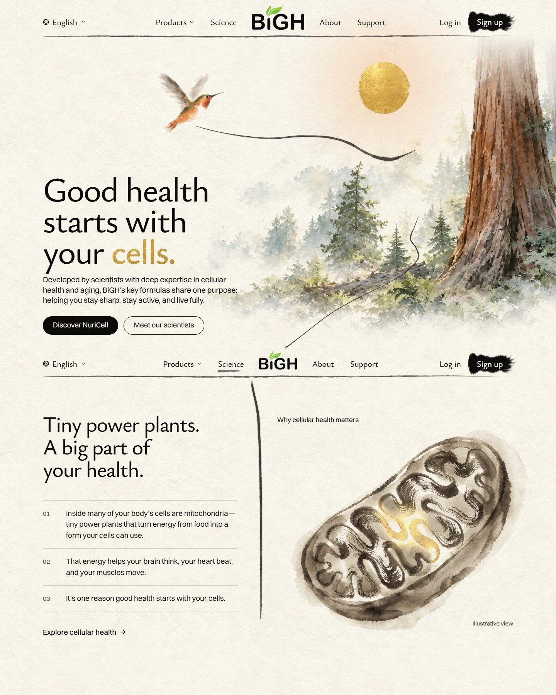<figcaption>Laptop, scrolling from the opening</figcaption></figure>
      <figure class="desk">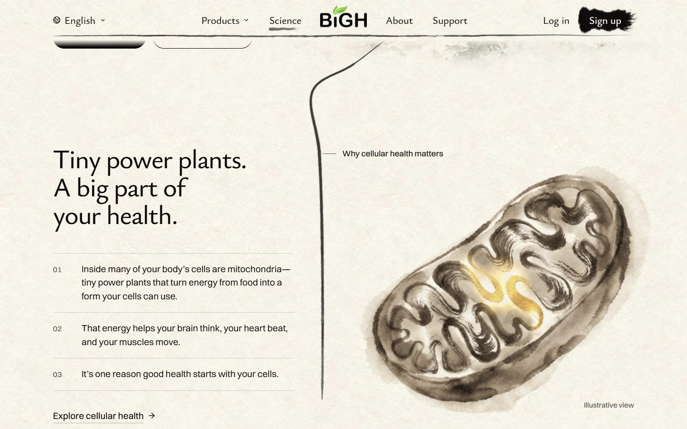<figcaption>Laptop, the section</figcaption></figure>
      <figure>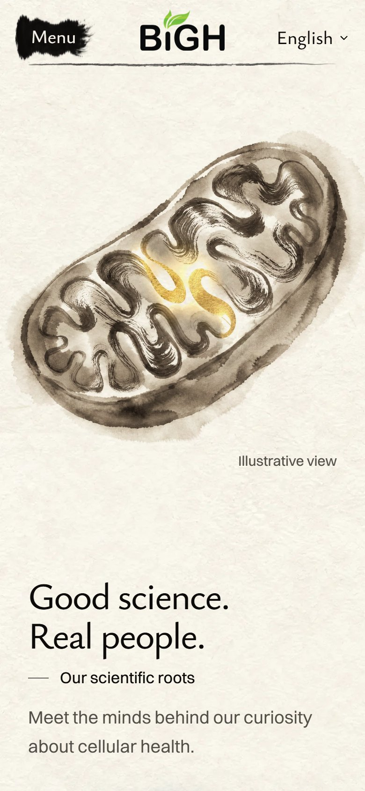<figcaption>Phone</figcaption></figure>
    </div>
  </section>

  <section class="choice" aria-labelledby="now-name">
    <div class="head">
      <h2 id="now-name">Today, for comparison</h2>
    </div>
    <p class="note">Heavy black and blue-grey ink, right under the colourful opening.</p>
    <div class="shots">
      <figure>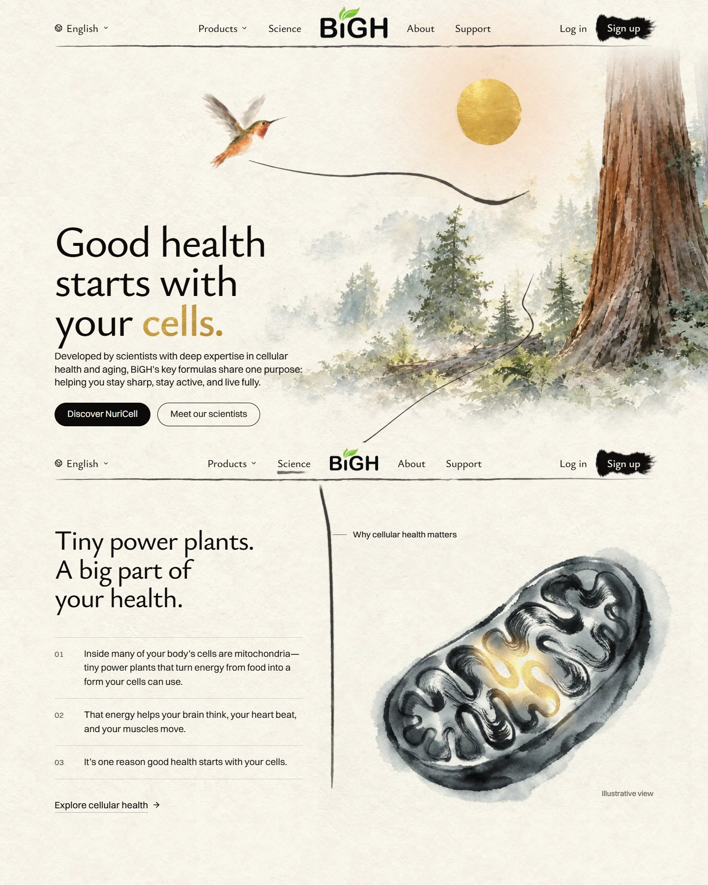<figcaption>Laptop, scrolling from the opening</figcaption></figure>
      <figure class="desk">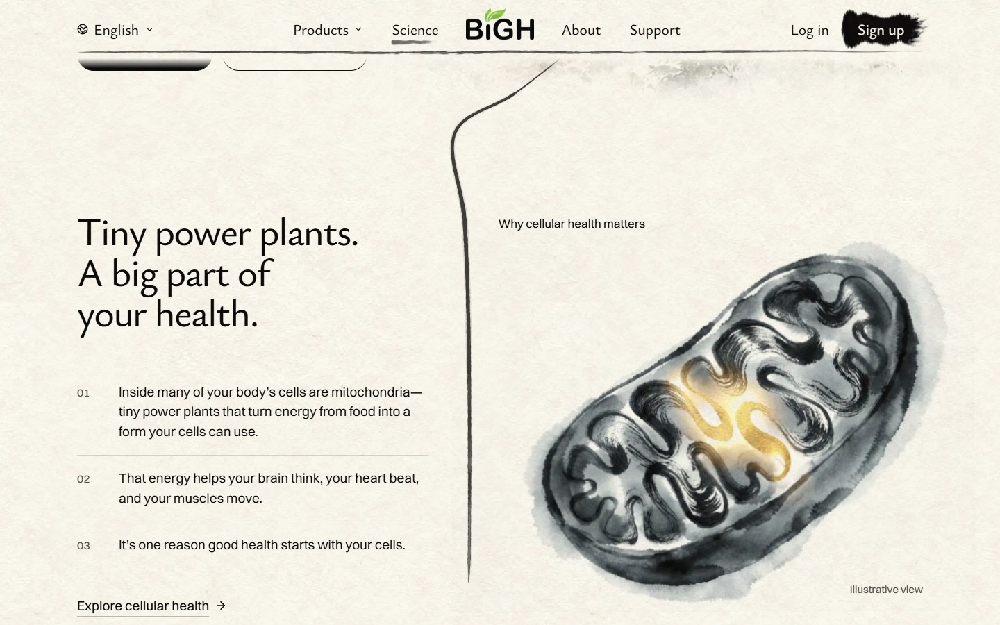<figcaption>Laptop, the section</figcaption></figure>
      <figure>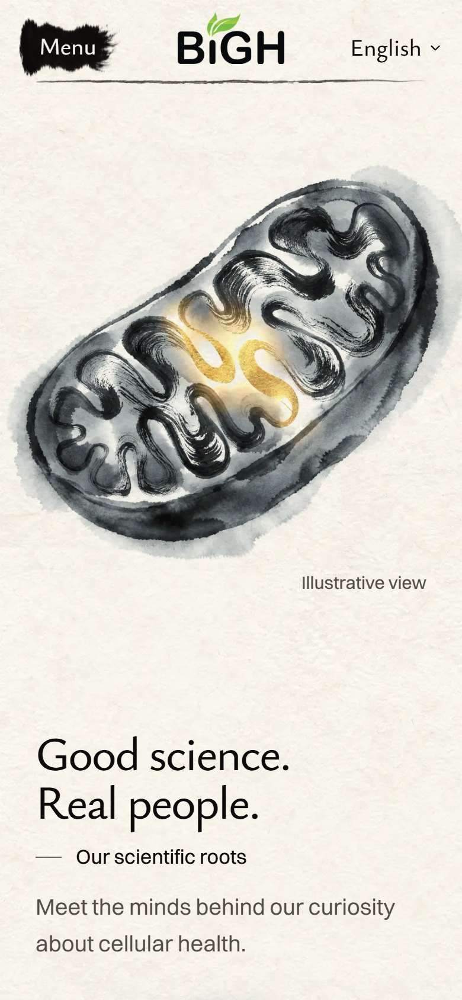<figcaption>Phone</figcaption></figure>
    </div>
  </section>
</main>
